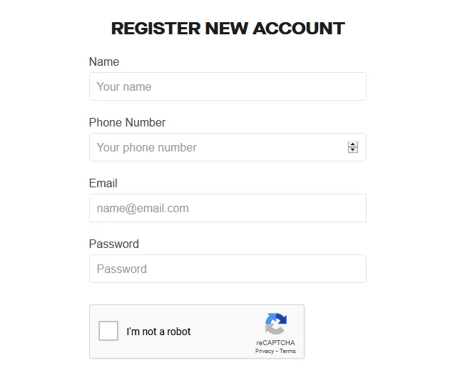
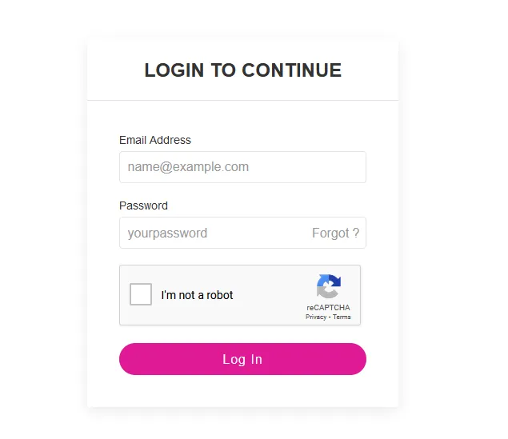
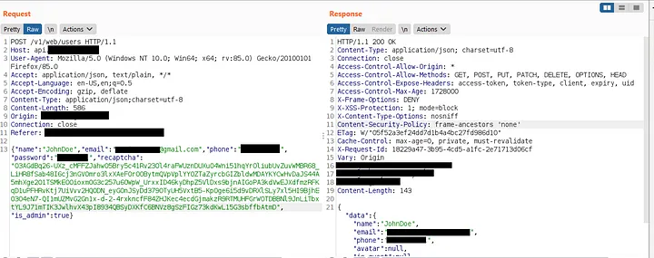
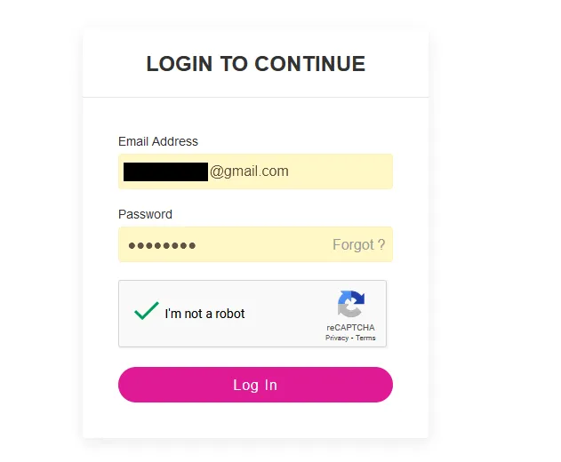
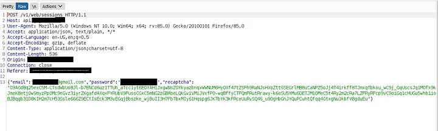
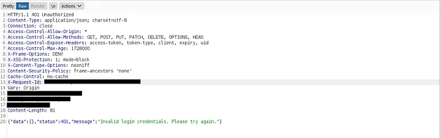
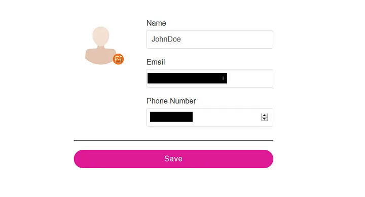

Takeover targetted users account via response manipulation.
Greetings, everyone! I hope you're all doing well. In this write-up, I will discuss an account takeover vulnerability that I discovered by manipulating the login response.
Technical Information
As part of my bug testing efforts in responsible disclosure programs, I came across a program that caught my interest. After thoroughly reading their rules of engagement, I decided to assess their security. For the purpose of this write-up, let's refer to the target website as target.com, an online platform that facilitates payments and food ordering. I signed up with the necessary information for Account 1 (abc@gmail.com), as shown below.

After signing up, the application sent a confirmation link to the provided email, which I verified. Upon verification, I was directed to the account settings page. To better understand how the application handled login requests, I decided to log out and log in again.

I noticed that the application utilized an API to authenticate users. Intrigued, I intercepted the login request to observe how the API processed the login process.

I observed that the signup and login responses were similar, but with some differences. This led me to the idea of manipulating the login response with the signup response. To proceed, I logged out and created another account, capturing the signup response for Account 2 (xyz@gmail.com).
It's go time...
Once again, I logged in with Account 1 (abc@gmail.com), using the same email ID but a different password.

I intercepted the login request as shown below.

Using Burp Suite's proxy, I applied "Do -> Intercept This Request -> Response" and changed the response status of the login request from 401 Unauthorized to the signup response of Account 2 (xyz@gmail.com), which returned a 200 OK status.


I also modified the email parameter in the response to reflect Account 1's email (abc@gmail.com), and then forwarded all the requests.

As a result, I was immediately directed to Account 1's settings page, successfully logging in without requiring a password by manipulating the login response with the signup response.
Thank you for reading.
For more updates and insights, follow me on Twitter: @thevillagehacker.